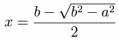

If to any straight line there is applied a parallelogram but falling short by a square, then the applied parallelogram equals the rectangle contained by the segments of the straight line resulting from the application.
Apply to the straight line AB the parallelogram AD but falling short by the square DB.
I say that AD equals the rectangle AC by CB.
This is indeed at once clear, for, since DB is a square, DC equals CB, and AD is the rectangle AC by CD, that is, the rectangle AC by CB.
If there are two unequal straight lines, and to the greater there is applied a parallelogram equal to the fourth part of the square on the less minus a square figure, and if it divides it into parts commensurable in length, then the square on the greater is greater than the square on the less by the square on a straight line commensurable with the greater. And if the square on the greater is greater than the square on the less by the square on a straight line commensurable with the greater, and if there is applied to the greater a parallelogram equal to the fourth part of the square on the less minus a square figure, then it divides it into parts commensurable in length.
Let A and BC be two unequal straight lines, of which BC is the greater, and let there be applied to BC a parallelogram equal to the fourth part of the square on the less, A, that is, equal to the square on the half of A but falling short by a square figure. Let this be the rectangle BD by DC, and let BD be commensurable in length with DC.
I say that the square on BC is greater than the square on A by the square on a straight line commensurable with BC.
Bisect BC at the point E, and make EF equal to DE.
Therefore the remainder DC equals BF. And, since the straight line BC was cut into equal parts at E, and into unequal parts at D, therefore the rectangle BD by DC, together with the square on ED, equals the square on EC.
And the same is true of their quadruples, therefore four times the rectangle BD by DC, together with four times the square on DE, equals four times the square on EC.
But the square on A equals four times the rectangle BD by DC, and the square on DF equals four times the square on DE, for DF is double DE. And the square on BC equals four times the square on EC, for again BC is double CE.
Therefore the sum of the squares on A and DF equals the square on BC, so that the square on BC is greater than the square on A by the square on DF.
It is to be proved that BC is also commensurable with DF.
Since BD is commensurable in length with DC, therefore BC is also commensurable in length with CD.
But CD is commensurable in length with CD and BF, for CD equals BF.
Therefore BC is also commensurable in length with BF and CD, so that BC is also commensurable in length with the remainder FD. Therefore the square on BC is greater than the square on A by the square on a straight line commensurable with BC.
Next, let the square on BC be greater than the square on A by the square on a straight line commensurable with BC. Apply to BC a parallelogram equal to the fourth part of the square on A but falling short by a square figure, and let it be the rectangle BD by DC.
It is to be proved that BD is commensurable in length with DC.
With the same construction, we can prove similarly that the square on BC is greater than the square on A by the square on FD.
But the square on BC is greater than the square on A by the square on a straight line commensurable with BC.
Therefore BC is commensurable in length with FD, so that BC is also commensurable in length with the remainder, the sum of BF and DC.
But the sum of BF and DC is commensurable with DC, so that BC is also commensurable in length with CD, and therefore, taken separately, BD is commensurable in length with DC.
Therefore, if there are two unequal straight lines, and to the greater there is applied a parallelogram equal to the fourth part of the square on the less minus a square figure, and if it divides it into parts commensurable in length, then the square on the greater is greater than the square on the less by the square on a straight line commensurable with the greater. And if the square on the greater is greater than the square on the less by the square on a straight line commensurable with the greater, and if there is applied to the greater a parallelogram equal to the fourth part of the square on the less minus a square figure, then it divides it into parts commensurable in length.
The construction solves the equation
where b denotes the greater line BC and a denotes the lesser line A. The solution is the line DC, which is

Then the proposition asserts that the ratio b : x is a numeric ratio if and only if the ratio √(b² – a²) : b is a numeric ratio. Since x/b is equal to 1/2 – √(b² – a²)/b, it's clear why one would be a numeric ratio if and only if the other is.
The lemma is also used in the next proposition. The proposition is used in several times in Book X starting with X.54.
| Book X | X.54, X.55, X.60, X.61, X.91, X.92, X.93, X.97, X.98, X.99 |
|---|